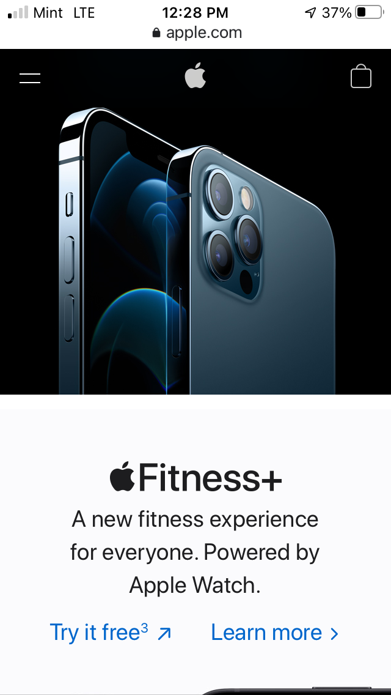

PARC: Contrast
Apple
Apple.com
Apple uses contrast to differentiate between it's different products, utilizing a black background for one product, and a white background for another.
PARC: Alignment
KSL News
Ksl.comAlignment is used to when aligning the images vertically. The stories are also vertically and horizontally aligned. All elements are aligned using a grid.
PARC: Proximity
Pandora
Pandora.comProximity is used to group the individual plans together for Pandora's music service, avoiding confusion and seeing the elements as a group that belongs together.